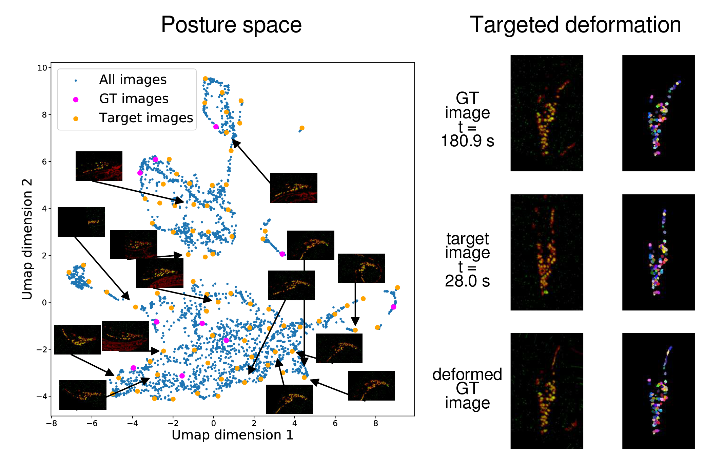

https://bit.ly/HelenaCasademuntSamuelLab
Combinatorial Olfactory Codes?

Lin et al. (2023)
Combinatorial Olfactory Codes?
Lin et al. (2023)
Whole Brain Imaging
Whole Brain Imaging

John Calarco, NeuroTrueFriend
Chemotaxis to diacetyl and IAA

Chemotaxis to diacetyl and IAA
Whole Brain Imaging
Annotation

Park et al. (2023)
Modeling
Strategies

Strategies
Speed doesn't matter
Strategies

Whole-brain imaging
Whole-brain imaging
Whole-brain imaging

Whole-brain imaging
Whole-brain imaging
AVA
Fast electron microscopy
Yaron, Core, Yicong, et al


Scanning Electron Microscopes
1 cubic millimeter
↓
4 nm × 4 nm × 30 nm per voxel
↓
2,000,000,000,000,000 pixels

1 µs / pixel
↓
60 years

61 beams
↓
1 year
Structural information for connectomics is sparse

Berghia stephanieae
Single-beam SEM image
Structural information for connectomics is sparse

Connectomics only requires membranes
Traditional single-beam SEM acquisition spends equal time on every pixel
Active acquisition
Human vision uses content-guided saccadic
eye movements to efficiently gather information
Segmentation of low-speed images (1 µs/pixel)

Slow scan, reference accuracy
Segmentation of high-speed images (0.1 µs/pixel)
Mostly okay
Segmentation of high-speed images (0.1 µs/pixel)
Merge errors predicted problematic areas
Segmentation of high-speed images (0.1 µs/pixel)
Around predicted problems areas → selective low-speed re-scan
Segmentation of high-speed images (0.1 µs/pixel)
Error-free segmentation of hybrid images
The pipeline
Analysis confirms speed and accuracy

Slow EM, GT segmentation

Hybrid EM, segmentation
Time ratio slow vs hybrid : 7.7 improvement
Indistinguishable accuracy (negligible variation of information)
Fast-acquisition, predict problematic regions

Rescan problematic regions

Reconstitute hybrid image
How much faster can smart electron microscopy be,
when matching the accuracy of homogenous slow scan?
Image generator for visual coherence

Fast scan
Image generator for visual coherence

Slow scan
Image generator for visual coherence

Hybrid scan with image reconstitution of fast scanned regions
Fast analysis for whole-brain imaging
Core, Mahsa, Kseniia, Sahand et al
All-manual analysis is slow
Augmenting training data for machine learning

Augmenting training data for machine learning
Motivation

"Is any of this knowledge practical? The reading of the external environment by cells of all types, leading to responses in growth or motility, is fundamental to life. Bacterial chemotaxis provides a model for learning how such processes can work. However this is not what has motivated me. I have wanted to know, simply, how such a tiny creature does its thing. How, for example, has it solved the problem of finding greener pastures within the constraints imposed by physics? This is a matter of curiosity. Curiosity is the driving force of basic science."
-Howard Berg
Acknowledments
Samuel Lab
Vlad Susoy
Core Park
David Zimmerman
Helena Casademunt
Stan Lazopulo
Alina Vrabiou
Gabriel Hosu
Zhen Lab
Dr. Daniel Witvliet
Dr. Ben Mulcahy
Min Wu
Dr. Wesley Hung
Lichtman Lab
Dr. Richard Schalek
Dr. Yaron Meirovitch
Dr. Yuelong Wu
Dr. Daniel Berger
Shavit Lab
Dr. Lu Mi
Dr. Yaron Meirovitch
Shashata Sawmya
Rahi Lab
Mahsa Barzegar Keshteli
Kseniia Korchagina
Ariane Delrocq
Pfister Lab
Yicong Li
Past Lab Members
Prof. Damon Clark, Yale
Prof. Andrew Leifer, Princeton
Prof. Vivek Venkatachalam,
Northeastern Univ
Prof. Sahand Jamal, EPFL
Prof. Quan Wen, USTC
Prof. Guangwei Si, Beijing
Prof. Ni Ji, Beijing
Dr. Albert Lin, Princeton
Dr. James Mitchell, Harvard
References
M. B. Ahrens, M. B. Orger, D. N. Robson, J. M. Li, and P. J. Keller, “Whole-brain functional imaging at cellular resolution using light-sheet microscopy,” Nature Methods, vol. 10, no. 5, pp. 413–420, 2013.
D. A. Clark, C. V. Gabel, H. Gabel, and A. D. T. Samuel, “Temporal Activity Patterns in Thermosensory Neurons of Freely Moving Caenorhabditis elegans Encode Spatial Thermal Gradients,” The Journal of Neuroscience, vol. 27, no. 23, pp. 6083–6090, 2007.
T. A. Jarrell, Y. Wang, A. E. Bloniarz, C. A. Brittin, M. Xu, J. N. Thomson, D. G. Albertson, D. H. Hall, and S. W. Emmons, “The connectome of a decision-making neural network,” Science, vol. 337, no. 6093, pp. 437–444, 2012.
J. P. Nguyen, F. B. Shipley, A. N. Linder, G. S. Plummer, M. Liu, S. U. Setru, J. W. Shaevitz, and A. M. Leifer, “Whole-brain calcium imaging with cellular resolution in freely behaving Caenorhabditis elegans,” Proceedings of the National Academy of Sciences, vol. 113, no. 8, E1074– E1081, 2016.
C. F. Park, M. B. Keshteli, K. Korchagina, A. Delrocq, V. Susoy, C. L. Jones, A. D. T. Samuel, and S. J. Rahi, “Automated neuron tracking inside moving and deforming animals using deep learning and targeted augmentation,” bioRxiv, 2022.
V. Susoy, W. Hung, D. Witvliet, J. E. Whitener, M. Wu, C. F. Park, B. J. Graham, M. Zhen, V. Venkatachalam, and A. D. Samuel, “Natural sensory context drives diverse brain-wide activity during C. elegans mating,” Cell, vol. 184, no. 20, 5122–5137.e17, 2021.
V. Susoy and A. D. Samuel, “Evolutionarily-conserved behavioral plasticity enables contextdependent performance of mating behavior in c. elegans,” bioRxiv, 2023.
V. Venkatachalam, N. Ji, X. Wang, C. Clark, J. K. Mitchell, M. Klein, C. J. Tabone, J. Florman, H. Ji, J. Greenwood, A. D. Chisholm, J. Srinivasan, M. Alkema, M. Zhen, and A. D. T. Samuel, “Pan-neuronal imaging in roaming Caenorhabditis elegans,” Proceedings of the National Academy of Sciences, vol. 113, no. 8, E1082–E1088, 2016.
J. G. White, E. Southgate, J. N. Thomson, and S. Brenner, “The Structure of the Nervous System of the Nematode Caenorhabditis elegans,” Philosophical transactions of the Royal Society of London. Series B, Biological sciences, vol. 314, no. 1165, pp. 1–340, 1986.
D. Witvliet, B. Mulcahy, J. K. Mitchell, Y. Meirovitch, D. R. Berger, Y. Wu, Y. Liu, W. X. Koh, R. Parvathala, D. Holmyard, R. L. Schalek, N. Shavit, A. D. Chisholm, J. W. Lichtman, A. D. T. Samuel, and M. Zhen, “Connectomes across development reveal principles of brain maturation,” Nature, vol. 596, no. 7871, pp. 257–261, 2021. Aravinthan D.T. Samuel